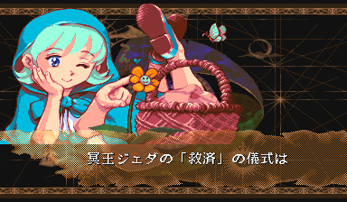
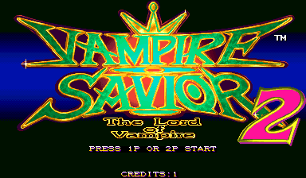

Vampire Savior 2
English translation
Screenshots
Original

Patched


Original

Patched

About this patch
Vampire Savior 2 is a Japan-only update of Vampire Savior with a shuffled roster — Donovan, Huitzil, and Pyron join the fight, while Gallon, Aulbath, and Sasquatch sit this one out — plus its own set of endings. It never came out in English. This patch translates the entire game.
Where the dialogue matches the Western release of Vampire Savior, the patch reuses Capcom's own English so it reads like the official localization. The lines unique to this version — the quotes for Huitzil, Pyron, and Donovan, along with every ending and the final confrontation with Jedah — are newly translated to read naturally while staying true to the original.
The title screen keeps the Vampire Savior 2 name, which is how the game appeared in arcades. 'Darkstalkers 3' was a later name used only for the home versions.
What's changed
- USA region presentation
- Western character names on character select, route map, and fight HUD: Bulleta → Baby Bonnie Hood, Zabel → L.Raptor, Lei-Lei → Hsien-Ko, Phobos → Huitzil
- All 241 post-fight quotes in English (192 official arcade records reused verbatim, 48 VS2-only records newly translated)
- All 29 ending pages and both 4-page Jedah final-boss dialogs translated and relocated into verified free ROM space
- Route stage names and option labels verified byte-identical to the official U.S. arcade records
Downloads
Neither download contains ROM data: you need your own dump of
Vampire Savior 2: The Lord of Vampire (Japan 970913) as the MAME set vsav2.zip.
Each zip includes a readme.txt with full instructions.
How to apply (ROM patch)
unzip vsav2-english-rc1-ips.zip -d vsav2-patch
cd vsav2-patch
python3 apply.py /path/to/vsav2.zipThis verifies every file against the checksums below before and after patching,
then writes vsav2_patched.zip. Rename it to vsav2.zip
and put it ahead of the stock set in your MAME rompath. Alternatively, apply each
file in ips/ with any IPS patcher (Flips, Lunar IPS, …) to the ROM file
of the same name and re-zip the set yourself.
MAME reports checksum warnings for the patched program ROMs when loading — that is expected, and the game runs normally.
MiSTer
Copy Vampire Savior 2 (English Translation).mra from the MRA download anywhere under
_Arcade/ on your MiSTer, and have the stock, unmodified romset at
games/mame/vsav2.zip (split MAME sets also need qsound.zip).
You need Jotego's jtcps2 core, which the standard MiSTer downloader
(update_all) installs automatically.
The MRA references your original romset and applies the translation in memory
while the game loads — nothing on your SD card is modified. The translation keeps
its own settings and saves under the setname vsav2en.
Changed ROMs
| File | Size | Original CRC32 | Patched CRC32 |
|---|---|---|---|
| vs2j.03 | 512 KB | 89fd86b4 | a211712c |
| vs2j.04 | 512 KB | 107c091b | 974896f9 |
| vs2j.08 | 512 KB | 2018c120 | cb8b85c6 |
Notes
- Release candidate: the translation is complete and every changed surface has passed automated acceptance, but wording review is still open. Report anything that reads badly.
- MAME reports checksum warnings for the three patched program ROMs. This is expected; the game boots and plays normally.